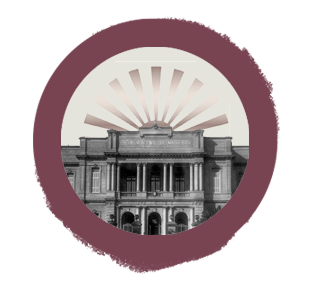
El itinerario Institucionalización y expansión propone un recorrido que va desde fines del siglo XIX hasta mediados del siglo XX . Inicia un ciclo de génesis e institucionalización del sistema formador a nivel nacional haciendo foco en el escenario cordobés y la creación de las escuelas normales en el territorio provincial. El normalismo constituye una marca de la época: para ejercer el oficio docente, se requiere un título obtenido en la escuela normal. El recorrido continúa presentando los debates que atravesó la formación docente durante las primeras décadas del siglo XX: las influencias del espiritualismo y el escolanovismo en Argentina imprimieron modernizaciones en un momento en que la formación docente atravesaba un ciclo en expansión. La experiencia de la Escuela Normal Superior en la Córdoba de los años '40 es una expresión paradigmática de los debates de la formación docente de la época.
Debates, actores y sentidos en el proceso de fundación de las escuelas normales en Córdoba.
Fragmento del documental
Las Escuelas Normales en la génesis del sistema formador en Córdoba
Las escuelas normales a la conquista del territorio
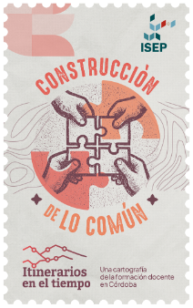
Contexto político educativo nacional y debates sobre la formación de maestros a fines del siglo XIX
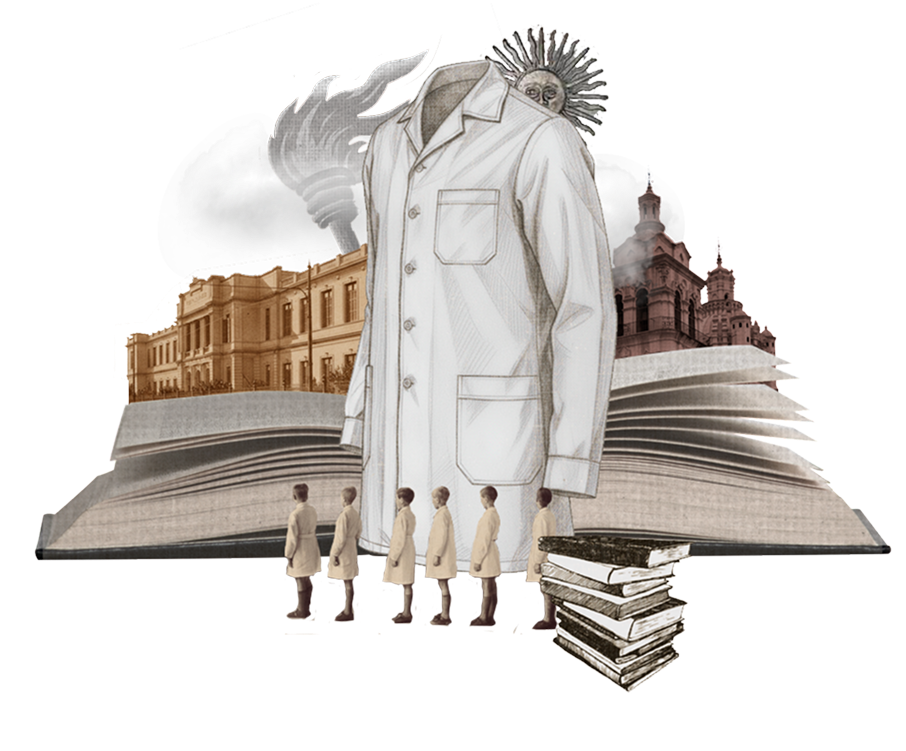
Con un discurso de modernización cosmopolita, el normalismo procesó –muchas veces mediante la negación, la censura y la persecución- las diferencias de origen de sus alumnos y docentes, y buscó imponer un imaginario común de cuño ilustrado, con fuertes elementos positivistas, republicanos y burgueses.
Los normalistas amaban la cultura escrita y tenían al higienismo, al decoro y al “buen gusto” como sus símbolos culturales más distinguidos, a los que oponían tanto el lujo y el derroche aristocrático como la ignorancia, la sensualidad y la “brusquedad” de los sectores populares.
Quizá uno de los mejores símbolos de esta situación sea el guardapolvo blanco que los escolares y maestros argentinos utilizan desde las primeras décadas del siglo XX, símbolo que también puede leerse como cierta búsqueda de una identidad común, bandera de lucha de los docentes y estudiantes en defensa de la educación pública, entre otros aspectos.
Fragmentos del cuaderno
Estudios pedagógicos sobre el oficio de enseñar
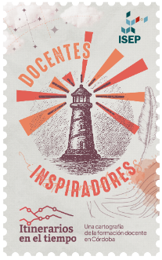
El clima de época en una escuela normal pardigmàtica: la historia de Jennie Howard en el Carbó.
Fragmento del podcast
La Casa del Diablo
Las marcas de la matriz fundacional normalista en la arquitectura del Carbó.
Las huellas del normalismo persisten en la arquitectura de la escuela Carbó, ubicada en el centro de Córdoba. Los protagonistas actuales recorren la institución día a día, muchas veces desconociendo las ideas que guiaron la construcción de los salones y pasillos, escaleras, patios y ventanas.
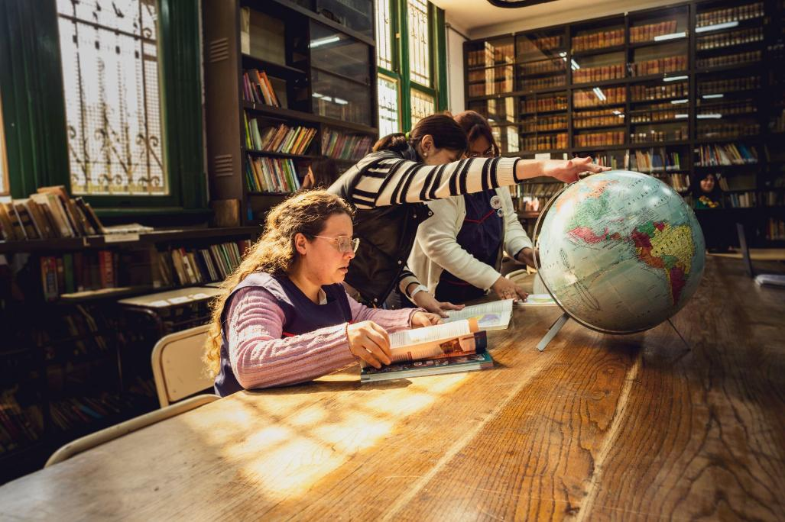
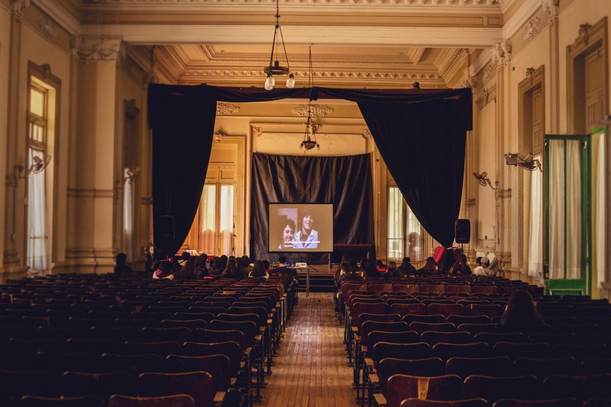
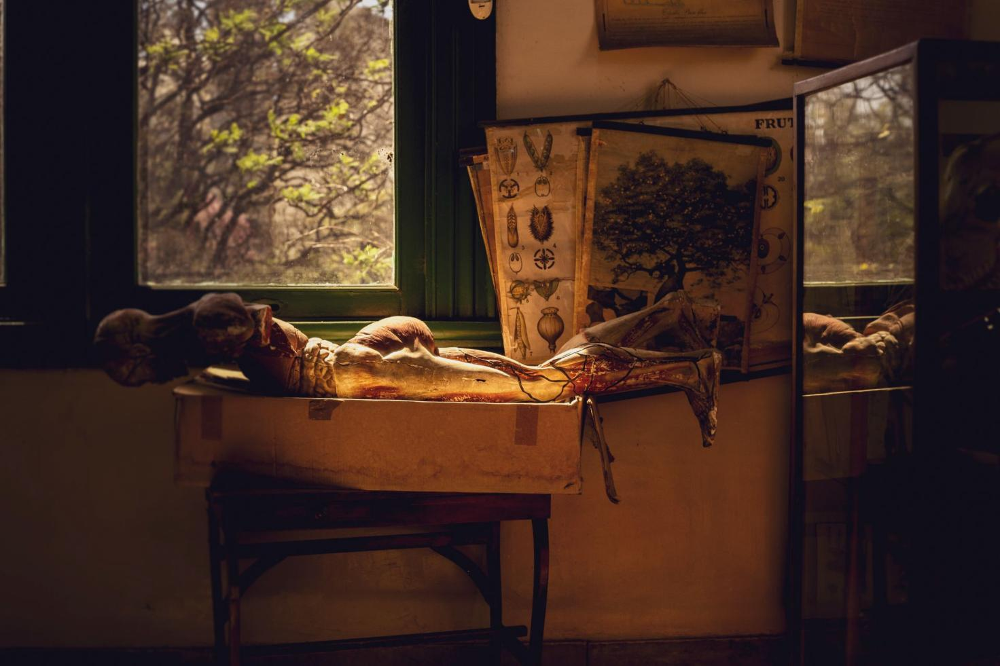
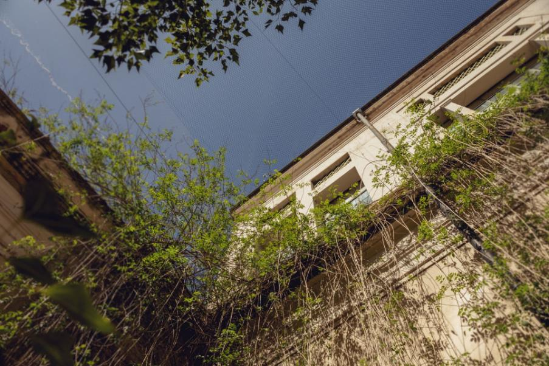
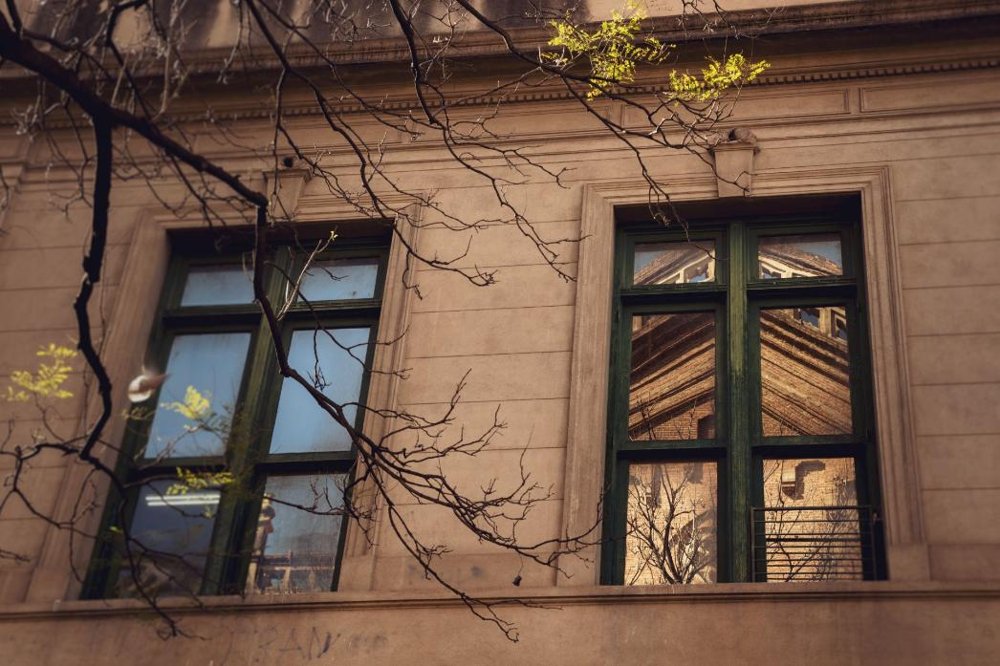
"Pero esa composición que la fotografía nos muestra puede señalar otras cosas. Más que la disputa entre dos modelos definidos con claridad que asumen valoraciones absolutas (normalismo laico y titulación, que acredita una formación adecuada y moderna, versus educación religiosa amateur, que aseguraba la transmisión de los valores tradicionales de la comunidad), el reflejo de la iglesia en la ventana del colegio puede indicar la presencia del afuera en el adentro; un resto religioso en el proyecto educativo y nacionalizador encarado por el Estado."
Producción de presencia por Diego García
Continuar leyendoFragmento del álbum
Fotografias de escuelas, el arte de la observación
El Escolanovismo: un Normalismo a la cordobesa.
Este recorrido llega a su fin, pero como todo lo vivo, este paisaje no se detiene.
Sigue creciendo, con cada gesto, cada palabra, cada encuentro.
Vos también sos parte de esta historia en marcha.
Después de haberlo recorrido...
¿qué rincones de este paisaje resuenan en tu historia personal?
Elegí la estampilla que mejor representa tu motivación docente y compartila.
Descargar estampillas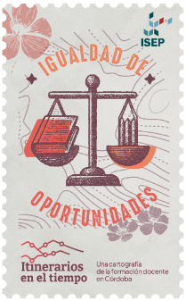
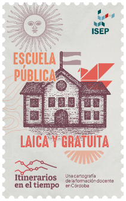
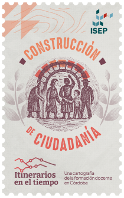
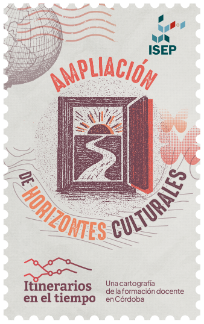
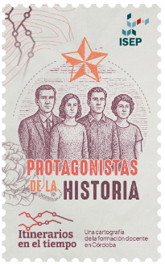
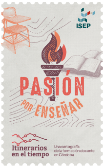